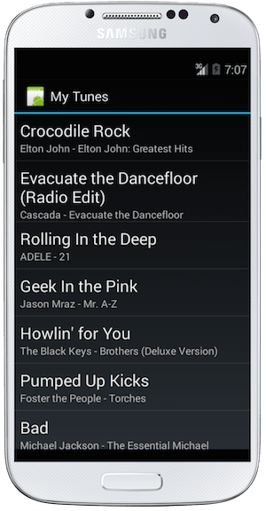
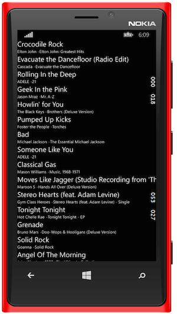

Exercise 1: Working with Shared Projects
Duration:
20 minutes
Lab Goals
The primary goal of this exercise will be to load some Json data in from a file and use it as a source to display information in an iOS, Android and Windows Phone application. The code to manage the loading of the file will be completely shared between the projects using a Shared Project.
We will need to do the following steps
- Create a new Shared Project
- Add 2 shared source files (Song.cs and SongLoader.cs) to the shared project - these have already been written for you and are in the lab resources folder.
- Add a reference to the Shared Project to each of your target projects
- Add a Nuget reference to Newtonsoft's Json.net parser which is used by the shared project code into each target project.
- Add a data file into each of the target projects which is processed by the shared code.
- Modify the shared code to properly load the file based on the platform.
Development Environment Notes
Xamarin Studio on the Mac
You will only be able to load two of the three projects - Windows Phone is not a supported platform and you will get an error indicating the project cannot be loaded. It is safe to ignore this error; just work with the iOS and Android portions of the lab.
Visual Studio on Windows
You will need to make sure you are running Visual Studio 2013 with Update 2 or Update 3 applied, and also install an extension which will allow you to use Shared Projects in all projects types. This extension can be installed inside Visual Studio through the Tools > Extensions and Updates... menu option. Then select Online in the tree and search for Shared Project Reference Manager. Select it and click the Download button.

Required Assets
There are included resources in the Content/Exercises/Xplat/Part 01 Resources folder which are needed to complete this exercise. These are included with the course materials, so make sure you have them available before starting.
Exercise Challenge
Using the Worksheet to give you the information you need, try to accomplish the lab goals on your own. If you need some additional help, there are step-by-step instructions below which you can use if you get stuck or need a hint.
Steps
Open the Starter Solution
- Open the starting project MyTunes included in the Part 01 Resources folder with either Xamarin Studio on the Mac, or Visual Studio on Windows.
- You can run any of the projects - they all present a simple list of data, except the Windows Phone application which will show a blank screen.
Add the Shared Project
- Right click on the solution node and add a new project.
- Select Shared Project - it can be found under C# if everything is configured properly. See the screen shots below if you are having trouble.
- Name the project "MyTunes.Shared"
- You can delete the initial file added to the project if there is one (Xamarin Studio currently adds an empty file).


Add the code into the Shared Project
- In the Part 01 Resources folder there is a data sub-folder with two C# source files:
- Song.cs - this defines a class which provides information about a single song.
- SongLoader.cs - this is a class which can parse a JSON file off disk into a set of
Songobjects. It utilizes the Newtonsoft Json.net parser. - Add both C# files to your shared project - you can add existing files to shared projects in the normal fashion.
- Look at both source files to get a sense of the content you will be working with.
Add a Reference to the Shared Project
- In Xamarin Studio, you can add a reference to the Shared Project like any other reference - just use the References Folder. In Visual Studio, you will need to select a new option: Add Shared Project Reference from the references context menu:
- Do the same for each of the other projects you want to work with (iOS | Windows | Android).
- Try to build the projects - it should give you compile errors because we don't have a reference to the Newtonsoft Json.net parser which is used by the shared code.
- If you open the SongLoader.cs file, you will see that the identifiers are all colored in red.

Add a Nuget reference to Json.net
- Open the Nuget references - in Visual Studio, this is available as an option on the References folder, on Xamarin Studio you need to right-click on the Project node and select: Add > Add Packages...
- Search online and find the Json.net component - it should be one of the first packages displayed due to it's popularity.
- Add the package to each of your supported platforms - the package must be added into the target platform projects, notice that the Shared Project does not even have a references node!
- Look at the
SongLoaderclass again - notice it now is color coded properly because the reference has been added. The project should also compile now.


Use the Song Loader
Now, lets's add some code into each project to use the SongLoader to populate the UI. Pick each platform you want to run and use the steps below to adjust the code.
iOS
- Locate the
ViewDidLoadmethod in theMyTunesViewController. - Comment out the existing
TableView.Sourceassignment. - Make a call to load the data using
SongLoader.Load. This method is async, so you will need to decorate the method withasyncand use theawaitkeyword. - Take the resulting data and turn it into a
List<Song>. - Create a new
ViewControllerSource<Song>and assign the following properties: DataSourceproperty to your new list.TextProcto a lambda that returns the name:s => s.Name.DetailTextProcto a lambda that returns the artist and album:s => s.Artist + " - " + s.Album.- Assign the table source to the
TableView.Sourceproperty.
ViewControllerSource being used here is a simple, generic, UITableViewSource that uses delegates to identify the text and detail text for a row. You can examine the source code in the corresponding source file.
Android
- Locate the
OnCreatemethod in theMainActivity. - Comment out the existing
ListAdapterassignment. - Make a call to load the data using
SongLoader.Load. This method is async, so you will need to decorate the method withasyncand use theawaitkeyword. - Take the resulting data and turn it into a
List<Song>. - Create a new
ListAdapter<Song>and assign the following properties: DataSourceproperty to your new list.TextProcto a lambda that returns the name:s => s.Name.DetailTextProcto a lambda that returns the artist and album:s => s.Artist + " - " + s.Album.- Assign the object to the
ListAdapterproperty.
ListAdapter being used here is a simple, generic, BaseAdapter that uses delegates to identify the text and detail text for a row. You can examine the source code in the corresponding source file.
Windows Phone
- Locate the
OnNavigatedTomethod in theMainPage. - Make a call to load the data using
SongLoader.Load. This method is async, so you will need to decorate the method withasyncand use theawaitkeyword. - Take the resulting data and assign it to the
DataContextproperty. - There is already a
DataTemplatesetup to display the song data.
Make sure all your code compiles. It will fail at runtime because we don't have the data yet - let's do that next.
Add the songs data file
We will add the songs.json file from the Part 01 Resources folder into each target platform project - storing it into the normal resources area for each.
- iOS - Add the songs.json file into the Resources folder and make sure the build action is marked as "BundleResource"
- Android - Add the songs.json file into the Assets folder and make sure the build action is marked as "AndroidAsset"
- Windows Phone - Add the songs.json file into the root of the project (so the filename will match) and set the build action to "Content"
- Make sure all your projects still build succesfully.
Add code to read the file
Since we've got the data file stored in a platform-specific way, we will need to use platform-specific code to get to our data. We can use any of the three approaches outlined in the class session (conditional compilation, cloning and partial classes), and you should experiment and try each one in turn; however for the sake of time, we will use conditional compilation in these instructions.
All our work will be done in the SongLoader class, specifically the existing OpenData method which should open the file (the Filename constant defined in the file) and return a System.IO.Stream.
iOS
- Add a conditional marker for the iOS code. Xamarin.iOS defines the
__IOS__symbol for this. - In your conditional code block, use the
System.IO.File.OpenReadmethod to open the filename. - Make sure the iOS project builds.
Android
- Add a conditional marker for the Android code. Xamarin.Android defines the
__ANDROID__symbol for this. - In your conditional code block, use the
Android.App.Application.Context.Assets.Openmethod to open the filename. - Make sure the Android project builds.
Windows Phone
- Add a conditional marker for the Windows Phone code. Microsoft defines the
WINDOWS_PHONE_APPsymbol for this. - In your conditional code block, use the
Windows.ApplicationModel.Package.Current.InstalledLocation.GetFileAsyncmethod to open the filename. This returns aStorageFile. - Call
OpenStreamForReadon theStorageFileto retrieve aStream. - Because WinPRT APIs are all async, you will need to change the app signature to be
asyncand use theawaitkeyword - the call site will also need to be adjusted for this. - The other platform code can remain the way it is - you will get a warning from the compiler because no
awaitkeyword is used even though the method is decorated withasync. - Make sure the Windows Phone project builds.
Test the applications
- Run each of the platforms - they should all display the song list.
|  |  |
|  |
Summary
In this exercise, we have created a Shared Project and used it in an iOS, Android and Windows Phone application. The library had both platform-agnostic code, as well as some platform-specific code isolated with conditional compilation.